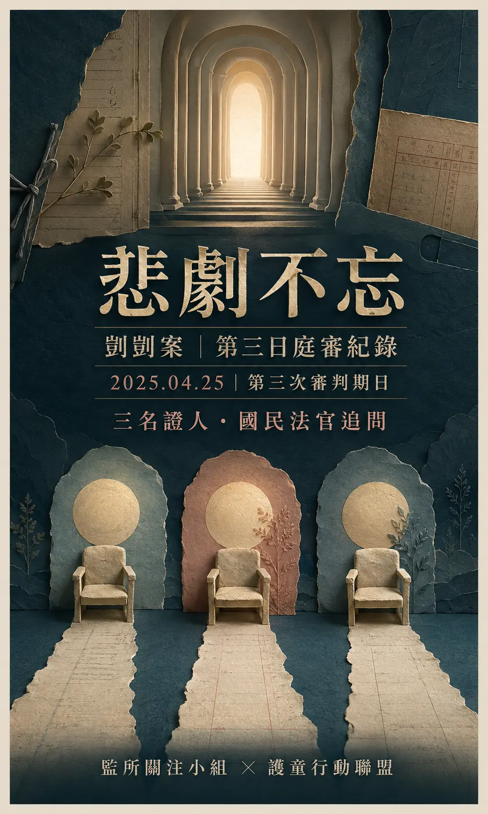
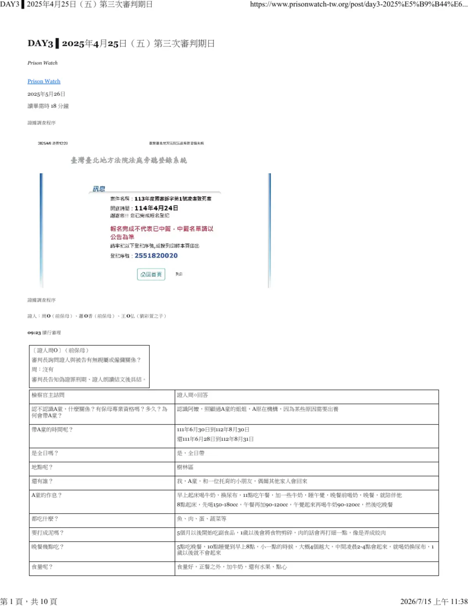

COURT HEARING RECORD · DAY 3
監所關注小組授權引用護童行動聯盟重點整理
第三次審判期日
悲劇不忘
剴剴案國民法官庭審紀錄｜2025年4月25日（五）
護童行動聯盟編輯導讀
在傷害發生以前，他曾經如何生活？在不同照顧者的記憶裡，法庭追問一個孩子前後改變的軌跡。

本頁涉及兒童不當對待、身體傷勢及令人不適的庭審陳述；敏感內容與完整紀錄均可自行展開或收合。證人陳述、檢辯意見及訴訟參與人意見均不等同法院最終認定。
01 · OVERVIEW
今日庭審速覽
第三日從09:23續行審理，先後訊問兩名前保母周○、蕭○香，以及劉彩萱之子王○弘。法庭聚焦孩子早期照顧狀況、交接資訊、身體與發展、後期家中所見，以及證言的直接觀察、記憶與可信性界線；17:24退庭。
02 · THREE WITNESSES
三名證人，三段不同時間
每名證人的在場時間、與當事人的關係及觀察條件不同；閱讀時不宜把三段證言合併成同一段連續經歷。
周○｜前保母
陳述約自2022年6月底至2023年8月底全日照顧A童的作息、飲食、健康、發展、外傷情形與後續交接。
蕭○香｜前保母
陳述A童約四至五個月大時的短期全日托育、手腳緊繃、哭泣、醫療建議及回報方式。
王○弘｜劉彩萱之子
陳述2023年9月至12月間在家與工作往返時所見，包括互動、跌倒說法、頭套、浴巾包裹及家中生活狀況。
關係揭露與具結
法院分別確認證人與被告的親屬或僱傭關係，告知偽證責任後完成具結。
03 · EVIDENCE LENS
讀懂第三日證詞的四種視角
第三日的證言跨越孩子不同年齡與照顧階段，重點不只是「有或沒有」，更要看清時間、範圍與證人如何得知。
照顧基準與前後對照
前保母說明當時的飲食、行走、遊戲、口腔與身體狀況，提供特定照顧期間的觀察基準。
哪些事情有被說明
法庭追問交接次數、社工聯繫、健康檢查、提醒事項，以及資訊是對誰說、是否直接傳達給後手照顧者。
醫療、照片與訊息
檢辯提示就醫紀錄、血液報告、照片、平面圖及對話紀錄，核對證人的記憶與說法。
關係、記憶與待查事項
證人與被告的親屬關係、未親眼看見的部分、時間矛盾及另案偵查，均是法院評價證明力時可能考量的因素。
04 · HEARING TIMELINE
第三日庭訊時間軸
以下依原始紀錄整理；原檔有一處時間先後矛盾，已在完整紀錄中原文保留並加註。
周○作證
前保母的照顧經驗、健康與發展、交接及外傷照片成為上午主要調查內容。
休庭後續問
國民法官與職業法官接續追問語言、行走、牙齒、探視要求及身體印記。
蕭○香作證
短期嬰兒照顧、緊繃反應、哭泣、醫療建議與回報方式接受檢驗。
王○弘作證
家中動線、看見孩子的頻率、跌倒與頭套說法、浴巾包裹及哭聲等內容進入調查。
休庭後法官提問
國民法官與職業法官追問觀察範圍、房間配置、家庭互動及證人實際在場情形。
裁定後退庭
法院說明拒卻鑑定人聲請及三項後續職權調查安排。
05 · EXAMINATION
交互詰問如何檢驗證詞
以下為庭上詢問方向與回答整理，不代表本頁採信其中任何一方。
建立孩子早期的生活與發展基準
法庭詢問飲食、睡眠、行走、遊戲、情緒、牙齒、口腔、身體印記及照顧難度，並以照片與醫療紀錄核對。
- 是否容易哭鬧或自傷
- 交接時的健康與外傷
- 社工與照顧者間資訊傳遞
檢驗記憶、報告與「正常」的依據
辯方提示就醫與血液檢查紀錄，詢問體重增加幅度、呼吸道症狀及醫師是否曾說明異常；證人多次回答不記得或以當時未被告知異常說明。
區分親眼看見、餘光所見與轉述
王○弘的工作出差、返家時間、與家人互動及實際照顧程度被逐一追問，法庭並核對他對跌倒、頭套、浴巾與哭聲的觀察基礎。
親屬關係與另案偵查
檢方以另案偽證調查彈劾證言；辯方主張當時尚未起訴或審判。該程序狀態是庭上攻防，不等同本案法院已判定證言真偽。
敏感內容展開閱讀證言涉及的不當對待與身體狀況
證詞涉及手部傷口結痂、頭部紅腫與跌倒說法、浴巾包裹、哭泣、排泄物及生殖器觀察等內容。本頁不展示傷勢照片，也不以插畫重演可能的傷害。
「沒有看見傷」只表示證人在其照顧期間或觀察範圍內沒有看見，不能單獨推論其他時間必然沒有傷勢。
06 · CITIZEN & PROFESSIONAL JUDGES
國民法官與職業法官追問了什麼
法官的問題橫跨孩子早期發展、交接、口腔與身體印記、探視、家中空間、頭套、浴巾包裹及證人的觀察範圍。本頁整理八個閱讀主題；完整問答請見下方紀錄。
八項為護童行動聯盟編輯整理，並非完整列舉所有提問。
追問路徑01 / 08
交接時真正說了什麼
周○稱曾對劉保母說「請多愛他、多疼他、多抱他」，奶量等照顧細節則是對社工說，與後手照顧者沒有充分交談。
追問意義｜釐清資訊由誰掌握、經過誰傳遞，以及後手照顧者是否直接收到。查看完整問答牙齒、口腔與身體印記
周○稱牙齒牢固、嘴巴完整，照顧期間未見手部白點與褐色印記；看到提示照片時哭泣並表示可與她提供的照片比對。
追問意義｜把不同時間的外觀資料放在同一條比較軸上，但仍須確認照片日期與拍攝條件。查看完整問答跌倒、擦藥與保護頭套
王○弘稱曾以餘光看到跌倒，之後看見擦藥並協助搜尋頭套；頭套訂購、朋友贈送及他實際看見的物件並非完全相同。
追問意義｜拆開事件、轉述與物件來源，避免將不同時間的敘述合併為單一確定事實。查看完整問答浴巾包裹、房間與觀察條件
王○弘稱半夜看見孩子被浴巾包裹、在電腦房軟墊上；他同時表示家人平日少聊天，自己回家後多直接進房。
追問意義｜確認具體看見的時刻，也同步核對證人平時能接觸到多少家庭生活。查看完整問答07 · TESTIMONY LIMITS
證詞與庭末意見的四個判讀面向
王○弘證詞｜六項待釐清處
語言內容前後難以並存
記錄 A｜第一次見面，稱孩子「慢慢」說出完整五字髒話。
記錄 B｜後稱「語調不清楚但是聽得出來」；原PDF末段又記「沒聽過A童講話」。
待釐清｜末句是否漏了「其他」二字？若非漏字，就與前述完整語句有直接張力。
頭套的訂購時間與「是否看過」
記錄 A｜11月底／12月初跌倒後，稱母親請他訂頭套，且在電腦房看過藍色頭套。
記錄 B｜另稱訂購在9、10月；檢方反詰時原PDF記「沒有看過頭套」。
待釐清｜是兩次不同事件？「沒看過」是沒看過物件，還是沒看過戴在孩子身上？
同一段跌倒敘述出現兩個地點
記錄 A｜稱在家中穿鞋時，以餘光看見人影跌倒，母親拿冰敷袋。
記錄 B｜晚間看見母親擦藥時，又轉述母親說孩子「去公園摔倒」。
待釐清｜這是兩次跌倒，還是同一傷勢的不同說法？擦藥與頭套所對應的是哪一次？
「乙地」與「丙地」標示對不上
記錄 A｜前文定義：乙地為6號3樓，丙地為4號3樓。
記錄 B｜跌倒段落卻寫「回到6號3樓（丙地）」。
待釐清｜可能是原記錄誤植，也可能是陳述混淆；未核對正式筆錄前不應自行改正。
浴巾包裹的光線、動線與解釋
記錄 A｜稱凌晨2點為免驚醒睡在客廳的父親而「不敢開燈」，仍將浴巾顏色與提示照片比較。
記錄 B｜敘述中的位置／姿勢包含浴室擦拭、電腦房包裹、站著與放在軟墊；又以「母親有要買頭套」解釋為何不覺得浴巾包裹奇怪。
待釐清｜需釐清現場光線、移動順序，以及頭套與浴巾包裹之間的關聯。
接觸有限，卻描述多個具體情節
記錄 A｜稱工作忙、不一定每天看到、不參與照顧，家人少聊天，回家多直接進房。
記錄 B｜又描述髒話、結痂、跌倒／冰敷／擦藥、浴巾、磨牙、哭聲與頭套等個別片段；但不知作息、睡房，也未看過進食飲水。
待釐清｜這不必然是矛盾，但個別片段不能直接推廣為持續照顧狀況；每件事仍需日期與旁證支持。
時間範圍
兩名前保母陳述的是更早的照顧期間；王○弘則描述2023年9月至12月間零散所見，三者不能直接互相替代。
觀察方式
親眼看見、餘光所見、聽見聲音、聽家人轉述與查看紀錄，證明基礎不同，須分開閱讀。
記憶與原檔矛盾
證人多次回答不記得；原始紀錄亦有時間順序矛盾與少數語意不完整處，本頁均加註而不自行推定。
庭末主張不是裁判
檢方、辯護人與訴訟參與人的摘要及可信性主張，都是程序中的立場，仍須由法院綜合全部證據判斷。
08 · COURT RULINGS
庭末四項裁定與後續調查
依原始紀錄，審判長於退庭前說明下列事項。
拒卻鑑定人聲請駁回
丘彥南醫師部分，法院認其具專業性，且簡報難以認定有勾串。
調閱氣溫資料
法院職權調閱文山測站2023年12月每日氣溫。
調查照片與聯絡紀錄
法院職權調查周○當日提供的一張照片及本院聯絡紀錄。
下次庭期先陳述意見
職權調查部分預定於4月28日、對劉若琳交互詰問前，讓各方表示意見。
FULL AUTHORIZED TRANSCRIPT · DIALOGUE EDITION
第三日完整旁聽對話紀錄
以下依庭審程序與發言角色重新編排，不以PDF頁次切割。相鄰且同屬同一題組的跨欄文字依語意接續；瀏覽器列印頁首、網址、頁碼與列印時間不列入。原檔如有語意或時間疑義均加註，不自行補造答案。
黃色標記：PDF原文重點粉紅卡片：編輯爭點註記註記為閱讀輔助，不代表法院最終認定。
引用檔案：DAY3 ▌2025年4月25日（五）第三次審判期日.pdf｜資料提供：監所關注小組｜查看原始發布頁

COURT RECORD
續行審理與周○具結
09:23 · 證據調查程序
09:23 續行審理
審判長
詢問證人與被告有無親屬或僱傭關係。
周○
沒有。
審判長告知偽證罪刑期，證人朗讀結文後具結。
COURT RECORD
周○｜檢察官主詰問
照顧期間、日常生活與外傷觀察
檢察官主詰問證人周○回答
問
認不認識A童？有保母專業資格嗎？為何會照顧A童？
周○
認識阿嬤，照顧過A童的姐姐。A童原在機構，因為某些原因需要出養。
問
照顧時間？是否全日托？
周○
先答111年6月30日至112年8月30日，又答111年6月28日至112年8月31日；是全日照顧。
問
地點、同住者與作息？
周○
在樹林區。我、A童和一名托育幼兒，家人偶爾回來。約8點起床喝奶、換尿布，11點吃午餐並補奶、睡午覺，下午再喝奶，5點吃晚餐，10點睡到翌日8點。
問
吃什麼？需要打成泥嗎？食量如何？
周○
魚、肉、蛋、蔬菜。五個月後開始副食品，一歲後剪碎，肉再打細如絞肉。食量好，正餐外還有牛奶、水果與點心。
問
睡眠與健康狀況？
周○
睡眠都還好；健康很好、按時接種。因轉往其他寄養家庭，兒福聯盟要求到亞東醫院健檢，回去看報告時沒有被告知異常。
問
個性、情緒與相處？
周○
一歲後會走路，有時調皮，個性溫和，見陌生人會害怕，情緒算穩定。感情很好，會抱抱、多陪伴，玩字卡、球與玩具。
問
愛哭、罵髒話、倒地僵直、自傷或需要特別費心嗎？
周○
不愛哭，幼時想喝奶會哭；不會罵髒話，也未接觸會罵髒話的人；不會倒地全身僵直、不會自傷，沒有特別難照顧。
問
接手時有哪些提醒？適應多久？
周○
兒福聯盟給了一張提醒事項；換尿布時較僵硬，到新環境會害怕，約一個月適應。
問
前保母交接時及你照顧期間有外傷嗎？
周○
沒有。並表示到劉彩萱家的照片中，A童和其他孩子一起玩時表情不同。
劉彩萱辯護人異議；審判長裁定駁回，認照片陳述非臆測。
COURT RECORD
周○｜反詰問與覆主詰問
就醫、體重、交接與照顧細節
劉彩萱辯護人反詰問證人周○回答
問
全日托包含週末？照顧期間接觸過母親嗎？
周○
包含週末。照顧A童期間未接觸母親，先前照顧過姐姐。
問
是否曾因生病就醫？紀錄顯示2023年5月至8月多次看診。
周○
換季溫差大會流鼻水，會帶去小兒科；日期已不記得，有紀錄就有。醫師說鼻子較過敏。
檢察官對提問異議；法官詢問辯護人提問目的，裁定異議成立。
問
交給劉彩萱時大約多重？
周○
大約10公斤，有體檢，寶寶手冊記載10.6公斤；只記得十點多到十一公斤。
問
提示亞東醫院及血液檢查紀錄，體重約10.8公斤、肌酐酸過低，醫師有說明嗎？
周○
沒有印象、不記得；領報告時若異常醫師會說明，當時記得醫師說正常。
問
交接情形？
周○
原要求兩次互動，她去過一次；另一次無法請假，由外婆與社工前往。曾向兒福聯盟詢問能否取得A童資料，但被告知不行。互動約一小時，奶量是對社工交代。
問
有交接玩尿布、呼吸道問題或陌生環境反應嗎？
周○
在她那裡不會玩尿布，交接時沒有呼吸道問題；見陌生人要看表情，表情變化時會安撫，哭多為生理需求。
劉若琳辯護人沒有問題。
檢察官覆主詰問證人周○回答
問
容易哭鬧、固定僵直站立、玩排泄物或自穿衣物嗎？
周○
不容易哭鬧、不會固定僵直站立、不會玩自己的大便；交接時還不會自己穿衣。
問
醫師曾說營養不良或體重異常嗎？
周○
沒有。她認為一歲多好動、消耗多，體重沒有下降。
問
交接時有感冒嗎？體檢前禁食嗎？交付哪些物品？
周○
交接時沒有感冒，感冒好後才做體檢；體檢前未禁食。第二次送衣服、寶寶手冊與健保卡，9月1日由外婆與社工帶過去。
問
為何沒有特別交接食物需剪碎？
周○
保母都知道；一歲多牙齒不多，食物要軟、要剪開，是一般照顧常識。
10:22休庭，11:00入庭。
COURT RECORD
周○｜國民法官與職業法官詢問
發展、口腔、探視與照片比對
備位國民法官（3號）證人周○回答
問
交接時對被告說過什麼？有講照顧方式嗎？
周○
對劉保母說「請多愛他、多疼他、多抱他」。來的時間較晚，沒有談到細節；她把奶量等資訊告訴社工。
備位2號、2號、備位1號證人周○回答
問
詞彙、行走、吃飯、專注力與口罩？
周○
詞彙少，會疊字、叫她阿嬤。走路沒有變形，餵食後慢慢輔助，吃飯約一小時；遊戲約十至三十分鐘會換項目。在家不戴口罩，流鼻水時也未與另一幼兒隔離。
問
手腳、需求、積木、翻書與走路？
周○
手腳無異狀；想玩就去玩，正餐副餐都有。會疊四、五個積木、翻書、把餐椅放回去。走路穩，跑步偶爾跌倒。
國民法官（5號、4號、6號、備位4號）證人周○回答
問
為何更換照顧者？奶粉與保母費來源？
周○
因為要出養。社會局提供奶粉、尿布，外婆給保母費，另有托育津貼，合計約三萬元。
問
牙齒、刷牙、口腔傷口與口內膏？
周○
上下都有牙，但不記得門牙是否全長；以紗布巾或指套牙刷清潔。嘴巴沒有破洞傷口、未用口內膏，牙齒牢固未搖晃。
問
叫名字有反應嗎？會認五官嗎？
周○
會轉身；玩時會談五官，但沒有特別測試。
問
曾提出探視要求嗎？
周○
有，但被拒絕；社工說要保護保母，後來沒有消息，並說要透過外婆。
陪席法官、受命法官證人周○回答
問
前一寄養機構為何離開？怕冷怕熱嗎？
周○
因監護與出養程序需先帶出機構。A童怕熱，熱時開冷氣、穿上衣加尿布；秋冬依溫度加背心或厚衣。
問
水果、學習、語言與喝水？
周○
會拿蘋果薄片吃；有教認字、說話，速度較慢，第一次說「byebye」。會說「水水」或用手指，水杯放在可見處會自己拿。
問
洗澡時有胎記或疤痕嗎？提示照片後所見印記在照顧期間存在嗎？
周○
屁股有胎記，手腳沒有。看到照片時表示害怕並哭泣；稱手上白色圓點、手臂褐色印記在她照顧時都沒有，可與她提供的照片比對。
紀錄載，周○轉向兩名被告表示：「太可惡了！」
審判長證人周○回答
問
保母經驗、體重增加幅度、換季就醫與一般食量？
周○
稱帶過約100名幼兒；一歲多體重短期增加不多屬常見，換季就醫亦常見。並說明一至兩歲半幼兒常見的一日牛奶、正餐、點心與水果安排。
審判長詢問各方意見；原紀錄載檢察官表示，周保母照顧時吃、穿衣等正常，沒有特別需要交接；兩名被告辯護人沒有意見。
COURT RECORD
蕭○香｜嬰兒期照顧與醫療提醒
主詰問、反詰問及法官提問
蕭○香於指認室作證。她表示與被告無親屬或僱傭關係，經告知偽證責任後具結。
劉彩萱辯護人主詰問證人蕭○香回答
問
職業、證照與照顧經驗？
蕭○香
有保母證照，從業17年，照顧超過10名幼兒。
問
如何認識A童？照顧多久？
蕭○香
由兒福聯盟轉介，A童四個多月時來、五個多月離開。後依紀錄確認為2022年5月4日至6月29日，在兒福聯盟辦公室交接，之後交給外婆。
問
交接時知道哪些健康與照顧資訊？
蕭○香
被告知健康，其他不多；有寶寶手冊，看醫生會用LINE告知社工。沒有與前一照顧者詳細交接。
問
有何不一樣？哭泣與安撫方式？
蕭○香
四個月大，整體還好；洗澡、換衣服時手較緊。會哭且用力、臉色改變，尿濕或餓時以拍、搖安撫。
問
醫師曾說全身緊繃或建議小兒神經科嗎？
蕭○香
對細節不記得；紀錄顯示醫師建議多觀察並至小兒神經科，她對紀錄沒有意見。
檢察官反詰問證人蕭○香回答
問
照顧有特別困難或發展異常嗎？
蕭○香
沒有特別困難。當時會練習翻身，四、五個月尚不會爬走；愛哭屬正常，成長未見異於同齡。
問
是否定期回報？緊繃如何處理？有自傷嗎？
蕭○香
會留下紀錄並用LINE傳給社工；緊繃時按摩放鬆，一般幼兒也可能有。沒有自傷。
12:16休庭，12:27入庭。
備位國民法官（1號）、國民法官（4號）證人蕭○香回答
問
照顧時生殖器有異常嗎？身上有胎記或其他印記嗎？
蕭○香
沒有。
原紀錄接續記載各方庭末摘要：辯方強調全日托、手腳緊繃、常哭及醫師建議；檢方表示照顧沒有特別困難；訴訟參與人指出當時僅四個多月大、成長與照顧未見特殊異常。
COURT RECORD
王○弘｜劉彩萱辯護人主詰問
家中動線、跌倒、頭套與浴巾
原紀錄記載14:24入庭。
王○弘表示劉彩萱是母親、劉若琳是阿姨；經告知偽證責任後具結。
劉彩萱辯護人主詰問證人王○弘回答
問
2023年9月至12月住處與工作作息？
王○弘
住6號3樓與母親同住。每月出差兩、三次，南北送貨，晚間約11、12點回家；貨放4號1樓地下室。
問
甲、乙、丙地及托育情形？
王○弘
4號1樓為托育地、6號3樓為自家、4號3樓為阿姨家。母親照顧兩名幼兒，一名由父母送來，一名由機構轉介。
問
第一次何時見A童？互動如何？
王○弘
約9月初晚間7、8點。他稱叫孩子喊哥哥時，聽見孩子說髒話，女友也在場；他向母親反映應告知社工。
問
是否參與照顧？何時會去一樓？
王○弘
不參與照顧，也反對在家帶小孩。多為到地下室拿貨或晚餐時經過一樓。
問
在一樓看見什麼？
王○弘
看見A童在桌邊與電視間玩玩具、摸摩托車，手放胸前摳結痂；母親叫他把手放下、手揹揹。
問
從地下室上來時的互動？
王○弘
看見A童站在門口，請他移開後孩子大哭；母親說現在不太講話，一說話就哭。證人稱孩子可自由移動，並曾要求母親聯絡機構換照顧者。
問
看過跌倒嗎？
王○弘
稱11月底或12月初出門穿鞋時，聽到聲音並以餘光看到人影倒下；母親拿冰敷袋。晚間回家又見母親擦藥，母親說是在公園跌倒，並請他訂保護頭套；原PDF此處寫作「回到6號3樓（丙地）」。
問
知道綑綁或用毛巾固定嗎？
王○弘
不知道綑綁；但曾在半夜約2點看見A童身體被浴巾包著，母親正在浴室擦拭，說孩子尿與排便在身上。又稱父親睡在客廳，所以不敢開燈；孩子被包裹在電腦房，並曾聽見磨牙聲。
問
看提示照片是否相似？有聽過哭聲嗎？
王○弘
浴巾包裹方式類似，但顏色不同，腳是否露出不確定。被問是否覺得奇怪時，稱不會，因母親有要買頭套，所以可以理解。另曾一次看見孩子在電腦房軟墊上哭，母親說他「很會討救兵」。
問
何時知道A童死亡？
王○弘
案發當天回家，父親在走廊說「出事了」，並轉述孩子噎奶死亡；他擔心在警局的母親，翌日才見到她。
原PDF記載：「14:17休庭，14:25入庭」。
COURT RECORD
王○弘｜第二辯方主詰問與檢方反詰問
頭套、觀察範圍與證言可信性
劉若琳辯護人主詰問證人王○弘回答
問
家庭關係與訂購頭套時間？
王○弘
稱大小阿姨關係緊張。約9、10月間母親說孩子半夜會撞來撞去，他要求聯絡機構換人；曾在蝦皮搜尋紅色厚頭套，約數百元、貨到付款，後因朋友送藍色棉布頭套而未取貨。
檢察官反詰問證人王○弘回答
問
有托育經驗嗎？知道母親證照、補貼、HbA1c或孩子作息嗎？
王○弘
沒有托育經驗；不知道證照時間、補貼與HbA1c，只知道母親有糖尿病；不清楚A童起床、睡覺及整體作息。
問
第一次見面時所稱髒話，能否描述？
王○弘
稱孩子慢慢說出五字髒話：「幹 你 娘 機 掰」。
問
知道來源機構、睡眠房間、尿布與日常嗎？
王○弘
只知道有機構與社工，不知何機構；不確定睡電腦房或母親房間，電腦房有軟墊與可能的棉被；應有穿尿布。
問
所稱異常行為及是否建議就醫？
王○弘
稱曾聽說或看見排泄相關行為與抓生殖器；聊天時有提過就醫。原PDF接著記載：「沒有看過頭套，大小不太知道，是兒童用的」。
問
是否另有偽證案件？
王○弘
檢方表示要以此彈劾證言。
劉彩萱辯護人覆主詰問證人王○弘回答
問
願意說明另案嗎？
王○弘
在審判長提醒可能影響另案後表示願意。稱案發後負責找律師，偵查庭中曾陳述相關內容；當時仍在偵辦、尚未起訴。
15:59休庭，16:22入庭。
COURT RECORD
王○弘｜國民法官與職業法官詢問
空間、在場頻率與直接觀察
備位國民法官（1號）證人王○弘回答
問
看見A童時的狀況、頭部與擦藥時所見？
王○弘
稱看見孩子包著浴巾站著，未觀察頭部；在沙發擦藥時只注意到頭部有點紅，未見其他特別之處。
國民法官（1號、3號、2號、備位2號）證人王○弘回答
問
所稱髒話的語音及母親對難照顧的反應？
王○弘
稱語調不清楚但他聽得出來；母親反映過難照顧，但說不容易找到人，孩子此前已有三、四人照顧過。
問
你幼時生病母親如何照顧？A童與B童在家戴口罩嗎？
王○弘
母親會帶他看醫生、吃藥。A童不太戴口罩；B童印象中也沒有，且非全日托。
陪席法官、受命法官證人王○弘回答
問
電腦房有床嗎？家人會聊天嗎？
王○弘
沒有床，有綠色軟墊，記得看過棉被但不確定。下班後各自生活，回家多直接進房，不特別聊天。
問
托育地與住處有嬰兒床嗎？B童是否常在？
王○弘
有綠色巧拼。B童由父母接送，多為半日托或週末回家；他看見B童的次數更少。
問
家中抽菸、頭部保護、在家天數與進食觀察？
王○弘
自己偶爾抽應酬菸，父親每天約一包、在家也抽。幼兒學走路時不會以布或水果網套包頭。沒有出差就會回家，但未看過A童如何吃飯喝水。
問
親眼看過哪些異常？注意門牙與手部嗎？
王○弘
稱看過往前撲、聽到他認為是髒話；第一次見面未注意上下門牙。原PDF此處緊接著記載：「沒聽過A童講話」，另稱曾親眼看見手部有洞、結痂。
COURT RECORD
王○弘證詞｜各方庭末意見
辯方摘要與訴訟參與人意見
劉彩萱辯護人意見
摘要稱證人第一次見面即聽見髒話、看到手上結痂；看見孩子站著但不認為是罰站；跌倒後有抱起冰敷、看見擦藥與公園跌倒說法；曾協助找、訂頭套並看過朋友提供的頭套；也看過母親幫孩子洗澡。
劉若琳辯護人意見
摘要稱孩子半夜會撞頭、曾購買頭套、電腦房內看過朋友贈送的頭套；另案偽證部分尚未起訴、未審判。
訴訟參與人意見
指出證人與兩被告分別為母子與姨姪關係；當時有另案偽證調查；證人少在共同生活空間、家人少聊天、未實際照顧幼兒，且對口罩、B童居住情形與HbA1c均不清楚。
COURT RECORD
法院裁定與退庭
職權調查安排
審判長裁定
1. 拒卻鑑定人丘彥南醫師部分裁定駁回；法院認丘醫師具有專業性，且簡報難以認定有勾串。
審判長裁定
2. 進行職權調查：調閱文山測站2023年12月每日氣溫。
審判長裁定
3. 進行職權調查：周○當日提供的一張照片及本院聯絡紀錄。
審判長裁定
4. 職權調查部分於下次庭期4月28日、對劉若琳交互詰問前，讓各方表示意見。
17:24 退庭。
17:24 · COURT ADJOURNED
第三日，退庭
護童行動聯盟編輯結語一個孩子曾經會走、會玩、會叫阿嬤，也曾被不同的人抱過、餵過、陪伴過。第三日留下的，不是單一證人的結論，而是不同時間、不同關係與不同觀察範圍之間，必須被逐一核對的落差。
資料來源
閱讀原始紀錄 ↗監所關注小組 Prison Watch
原文：DAY3｜2025年4月25日（五）第三次審判期日
本頁經監所關注小組授權引用，由護童行動聯盟重新整理、編排與製作動畫；如內容有疑義，以原始紀錄及法院公開資料為準。